What a SEDEX deposit is
stands for sedimentary exhalative. Metal-rich fluid vents (exhales) into a reduced sedimentary basin inside or on the edge of a continent, and the metals precipitate as sulphides on and just under the basin floor. The fluids are salty brines at warm, not hot, temperatures: above about 80 °C and mostly below 200 °C. The ore bodies are tabular, with zinc greater than lead ( and ) plus some silver, often with as gangue. The ore is interbedded with iron sulphides (pyrite and pyrrhotite) and with the basin’s own sedimentary rocks, which is why most geologists read these deposits as : formed at the same time as the sediment. slide 7
They belong to a family of hydrothermal exhalative deposits. deposits are tied to volcanic rocks (Lecture 10). SEDEX deposits, also called sediment-hosted massive sulphide (SHMS) deposits, sit in sedimentary basins. and Irish-type deposits come later in the course. slide 6
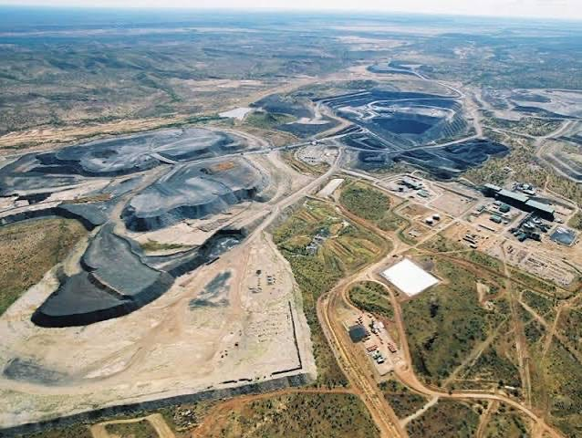
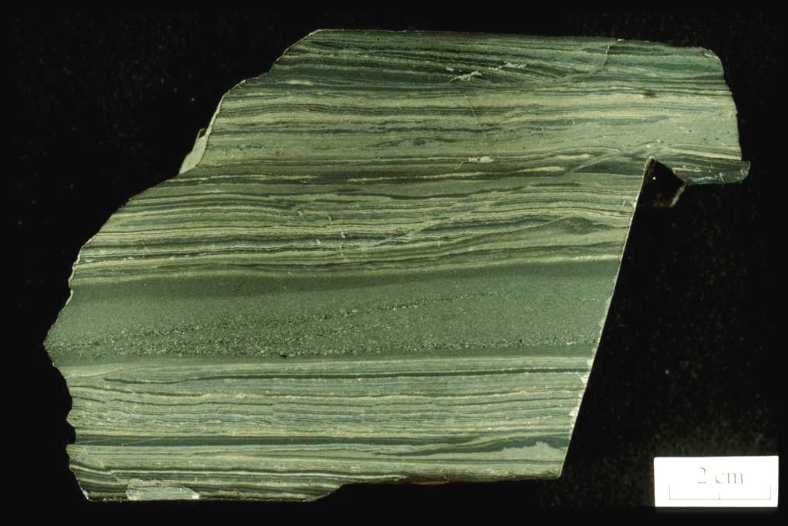
Before you read anything: describe the layering. How thick are the layers, how continuous, and are they all the same kind of material?
Show what I see
- Millimetre-scale layers, very flat and continuous across the 10 cm slab, with only gentle wavy disruption.
- Three kinds of band: thin pale layers, thin dark layers, and one thicker, speckled grey band with a sharp base that fines upward.
- No veins cutting the layers, no breccia, no massive sulphide lump.
So this is sediment that was laid down layer by layer. The thick graded band is a , the dark layers are black shale, and the thin layers between them are sphalerite and galena. The sulphides were deposited along with the mud, layer by layer, which is the core observation behind the syngenetic model.
That’s the surprise of SEDEX: “massive sulphide” is a bit of a misnomer. Most of the ore is fine sulphide in thin laminae between shale and siltstone layers, not a solid lump of sulphide. A piece of Century ore is just a black carbonaceous siltstone with a little sphalerite and galena along the layers and fractures. Dull to look at, but these are world-class deposits. lecture recording, 2 Oct
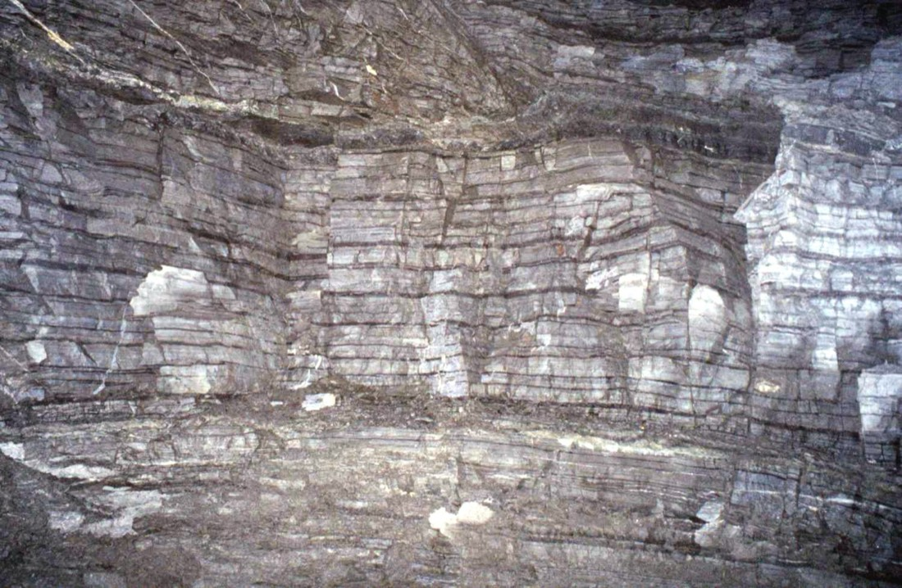
Check this one: the recording says HYC only started producing in about the last five years. The McArthur River mine has actually been operating since the mid 1990s, when ultra-fine grinding first made the ore treatable. The point that matters, that the fine grain size held it back for decades, holds either way.
- SEDEX: venting of saline brine (about 80 to 200 °C) into a reduced intracratonic or epicratonic sedimentary basin.
- Tabular, Zn > Pb (sphalerite, galena) plus Ag, barite gangue, interbedded with pyrite, pyrrhotite and basin sediment.
- Fine laminated ore, mostly syngenetic; HYC is the classic example.
Why zinc and lead matter
Zinc has a long history. The Charaka Samhita, an Indian text from around 500 BC, mentions zinc that oxidised to “philosopher’s wool” (zinc oxide), used as an ointment for the eyes and for open wounds. Zinc smelting moved from India to China in the 17th century, and the first European zinc smelter opened in Bristol in 1743. Zinc oxide is still in calamine cream, antiseptic ointments and sunscreen. slide 2
Today most zinc goes into steel (about 60%), then die-cast alloys (about 13%), brass (about 11%) and oxides and chemicals (about 8%). Galvanised steel is what EV makers prefer for car bodies, zinc coatings stop solar panel frames and wind turbines rusting, and zinc-ion batteries are considered safer than lithium-ion. Zinc is 100% recyclable without losing quality, but only about 30% of the zinc produced comes from recycled or secondary sources. slides 2 and 3
Who mines it, who holds it
Thousand tonnes of metal, USGS figures from slides 4 and 5. No reserve figure is given for Bolivia.
Australia is the world’s third zinc producer and second lead producer, but holds the largest reserves of both. A lot of that comes from SEDEX deposits. Sweden, the only big European producer, mines VMS deposits instead. slides 4 and 5 lecture recording, 2 Oct
The recipe: what a basin needs
Five things have to come together: an extensional setting; structures that control the basin shape and the fluid flow; a thick basin fill; large-scale hydrothermal fluid flow; and a water column that is stagnant and contains H₂S. slide 10
The basin is a continental rift with 2 to 5 km of permeable clastic sediments, often with volcanics or volcaniclastics. Those coarse sediments are the that holds the brine. Above them sit impermeable post-rift shales or carbonates, the . Without that lid, the fluid simply leaks away up the faults and you get slightly elevated metal everywhere and an ore deposit nowhere. slide 11 lecture recording, 2 Oct
Something must heat the basin. SEDEX deposits sit close in time and space to basaltic volcanics, dykes and sills, which raise the geothermal gradient and drive convection. Mafic sills help but aren’t essential; any heat source that keeps brine convecting will do. Discharge is focused where extensional faults meet transform faults, at only a few vent sites, and the basin must last a long time: 100 to 200 million years. slides 11 and 12 lecture recording, 2 Oct
The sea above needs to be : an enclosed basin with no fresh, oxygenated seawater flowing in. Evaporation carries on, so a restricted basin also becomes very salty. The deep water fills with H₂S, and that H₂S supplies the sulphur that will trap the metals. These are not black-smoker deposits: a SEDEX basin has one or two long-lived vent sites, not fields of chimneys. lecture recording, 2 Oct
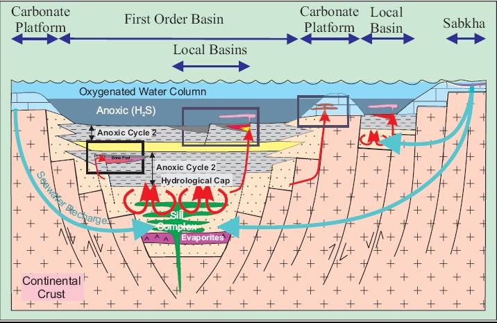
What’s missing from this basin?0 / 5
Building the McArthur Basin
Northern Australia’s SEDEX basins formed in a far-field setting in the Proterozoic. Subduction lay off to the south, under what is now the Arunta region, with an arc above it. About 500 km behind the arc, upwelling hot asthenosphere heated and thinned the crust, opening rift and sag basins and supplying the heat to keep brines convecting. The McArthur Basin and the Mount Isa Inlier both formed this way, and both host many SEDEX deposits. slide 13 lecture recording, 2 Oct
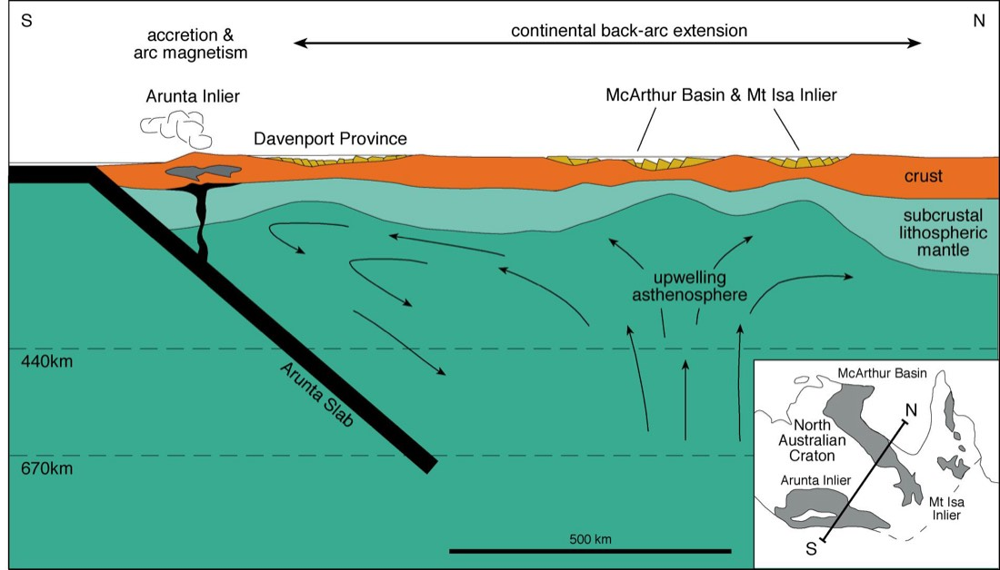
Build the basin, step by stepstep 1 of 4
The faults are deep and long-lived. HYC sits beside the Emu Fault Zone; the Hot Springs Fault nearby earns its name from the hot springs still on it, and the Calvert and Tawallah faults bound the Batten Trough. matter because they dilate as they move, letting fluid through, and where two faults intersect the dilation is bigger again. That’s where you look. slide 15 lecture recording, 2 Oct
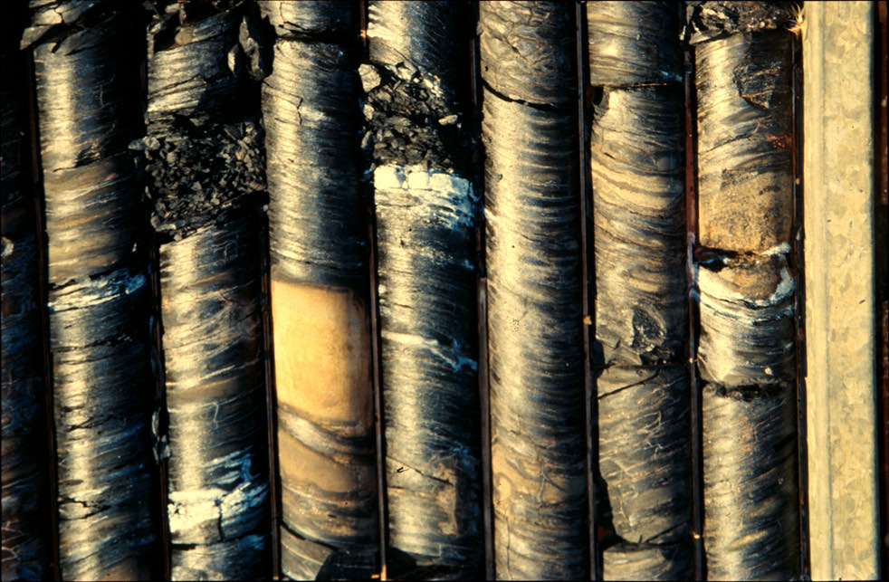
What colour is the rock, what’s its grain size, and what does that tell you about the water it was deposited in?
Show what I see
- Black to dark grey, very fine grained, finely and continuously laminated, with no sign of burrows churning the layers.
- One short pale interval, probably a carbonate-richer bed.
So this is the classic host: organic-rich dolomitic siltstone. Black means organic carbon survived, fine laminae that no animal disturbed (non-bioturbated) mean the bottom water had no oxygen. That’s the anoxic, H₂S-bearing basin floor the recipe demands. Almost every SEDEX deposit sits in rock like this. slide 45
Charging and breaking the aquifer
Down in the coarse syn-rift sediments, compaction and metamorphic reactions generate hot, salty, metal-rich brine. The impermeable cap holds it in, so pressure builds until the aquifer becomes (geopressured) and ruptures the cap rock. The brine is then focused up active faults. Focus is everything: for any ore deposit, unfocused flow just raises background metal levels. slides 17 and 45 lecture recording, 2 Oct
Brine doesn’t flow steadily. Each small earthquake releases stress on the fault, opens it, and lets a pulse of fluid through, and then minerals precipitate and seal it again. Pulse after pulse gives you layer after layer of sulphide. Because the basin passes through different anoxic cycles, the ore lenses in one basin can have different ages. slides 17 and 26 lecture recording, 2 Oct
Load the aquifer0 pulses
Pile on sediment and heat the basin. Watch the pressure.
Put the Goodfellow and Lydon model in order0 / 7
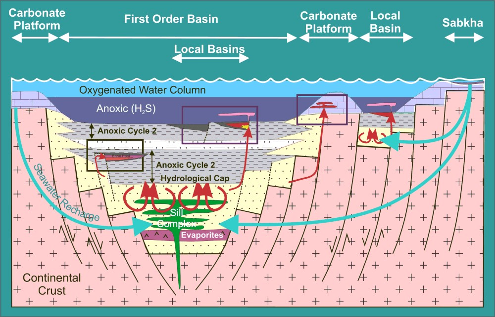
Vent-proximal or vent-distal: the brine decides
The architecture of a SEDEX deposit depends on how close the sulphides form to the vent, and that depends on the brine’s density. slide 18
deposits form from buoyant fluids that rise from the vent. You get alteration in the footwall, breccia pipes where overpressured fluid shattered the rock, and coarser sulphide close to the vent. deposits form from brine denser than seawater, which flows away from the vent and pools in depressions on the basin floor. The sulphides are interbedded with sediment and well laminated, with no footwall alteration, no breccia zones, and related barite. One basin can have both. slide 18 lecture recording, 2 Oct
| Ore fluid | Range |
|---|---|
| Salinity | 10 to 30 wt% total dissolved solids |
| Redox | reduced or oxidised |
| pH | acidic to near neutral |
| Temperature | 100 to 200 °C, nearer the low end |
slide 19; lecture recording, 2 Oct
Salinity makes brine heavy, heat makes it light. A vent-distal brine is more saline, cooler and oxidised, a dense brine that hugs the floor, as at HYC. A vent-proximal brine is less saline, hotter and reduced, an intermediate brine that rises a little but isn’t strongly buoyant, as at Sullivan in Canada. Go back to the brine at the top of the page and make each one. slide 20 lecture recording, 2 Oct
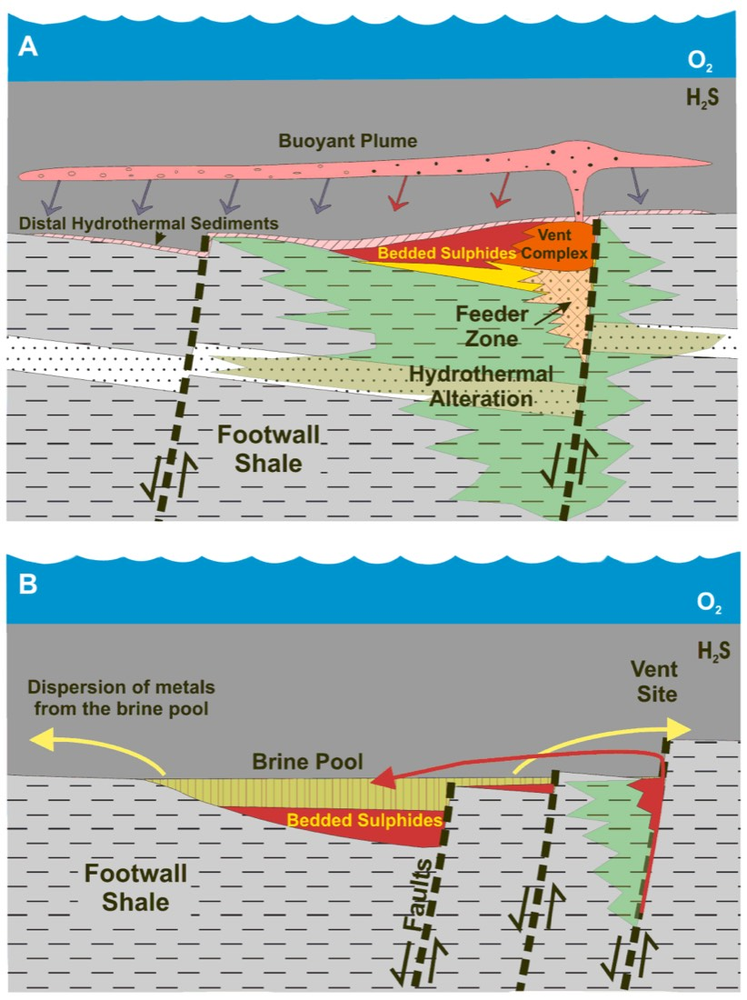
Proximal or distal?0 / 6
- Vent-proximal: buoyant fluid, footwall alteration, breccia pipe, coarser sulphide; lower salinity, higher T, reduced (Sullivan).
- Vent-distal: dense brine pooled in depressions, laminated sulphide, no footwall alteration, barite; higher salinity, lower T, oxidised (HYC).
- Fluids: 10 to 30 wt% TDS, 100 to 200 °C (maximum about 250 °C).
Fluids, metals and sulphur
Where does the brine come from? Seawater, evaporated at the surface. As seawater evaporates in shallow, restricted parts of the basin, the residual brine sinks and percolates down through the sediments, and water dissolving evaporite minerals (mainly halite) in the subsurface adds more salt. slide 21
Brines come in two flavours. In basins dominated by shales and turbidites, like the Selwyn Basin and Sullivan in Canada, they are reduced (H₂S greater than SO₄²⁻) and acidic. In basins dominated by sandstones and carbonates, like most of northern Australia, they are oxidised (SO₄²⁻ greater than H₂S) and near neutral. slide 22 (Cooke et al., 2000)
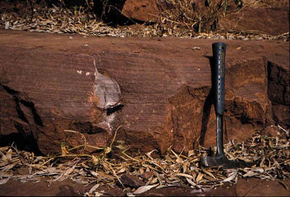
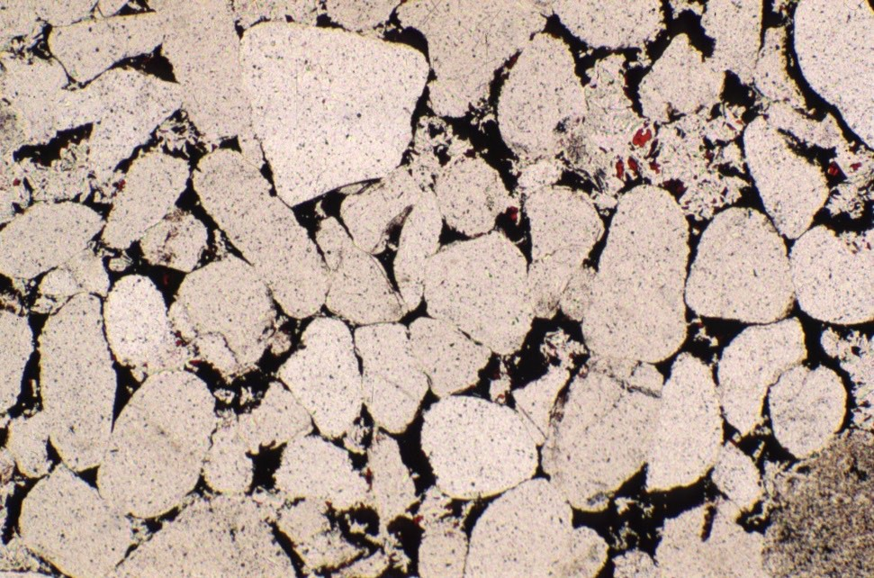
What gives the sandstone its colour, and what does that tell you about the brine that moved through it?
Show what I see
- A: red-brown, well-bedded sandstone.
- B: rounded quartz grains, each with a thin dark coating; the coating is hematite.
So the colour is hematite, oxidised iron, coating every grain. Brine that moved through this aquifer was oxidised, which fits the north Australian pattern. In a reduced basin like Sullivan’s, the grains would be coated with pyrite instead.
Why does redox matter so much? Because of how much metal the brine can carry. Zinc and lead travel as , and they stay in solution only while there is little reduced sulphur around. Slide the oxidation state below. slide 22
How much metal can the brine carry?
Curves read approximately off the slide 22 plot (200 °C, pH 5, total sulphur 0.0005 molal, 30 wt% NaCl).
Oxidised, sulphur-poor brines carry far more metal, and that’s also why barium can travel with them: barite is barium sulphate and drops out as soon as the fluid meets sulphate, so barium only moves in a chloride brine with little sulphur. The fluids stay below about 300 °C, and that is what keeps copper low in most of these deposits. slide 3, notes
So where does everything come from? The metals come from the basin fill itself, leached by brine convecting through the aquifer, driven by the heat source. The sulphur comes from the seawater: H₂S in the anoxic bottom water. When the two meet, the metal chloride reacts with H₂S and sphalerite precipitates:
ZnCl₂ + H₂S → ZnS + 2H⁺ + 2Cl⁻
Notice the chloride goes back into the water, so precipitating sulphide makes the bottom water even saltier. slides 24 and 25 lecture recording, 2 Oct The isotopes agree. Sulphur isotopes range widely, δ³⁴S from about -10 to +30‰, because sulphur came from seawater sulphate reduced in different ways. Lead isotopes are uniform with high μ values, pointing to upper-crustal rocks inside the basin as the lead source. slide 47
Where does each ingredient come from?0 / 4
Making the layers: a stratified sea
A SEDEX basin’s water column is layered like a cocktail. At the top is an oxic layer where Fe³⁺ is insoluble. Below it is a mixing layer where H₂S meets dissolved Fe²⁺ and pyrite precipitates. At the bottom is the anoxic layer, with more H₂S than sulphate. Brine entering this bottom layer meets H₂S and drops sphalerite and galena, and pyrite and silt rain down from above. Sphalerite aggregates grow and sink to the floor under gravity. slide 28 (Ireland et al., 2004)
Three things build the layered ore: organic-rich mud settling slowly from the water column (pelagic), carbonate-rich silt sliding in from the shelf as mass flows, and pulses of zinc-lead brine set off by tectonism. Build some. slide 26 lecture recording, 2 Oct
Lay down the ore0 layers
Pick an event. Each one adds a layer to the basin floor.
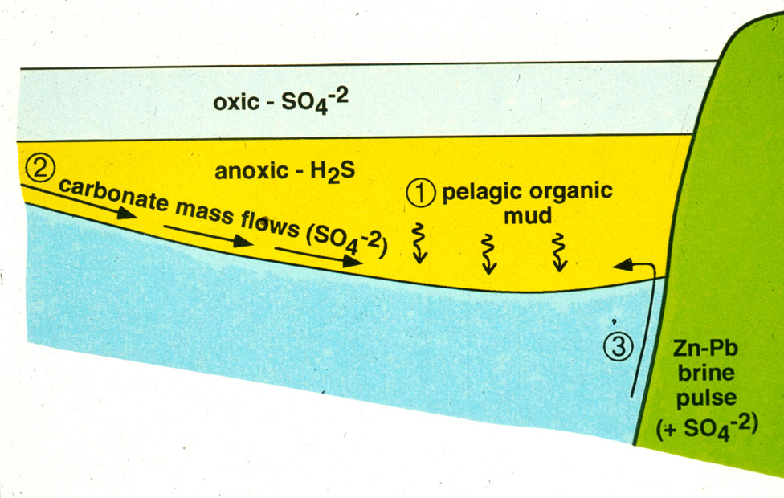
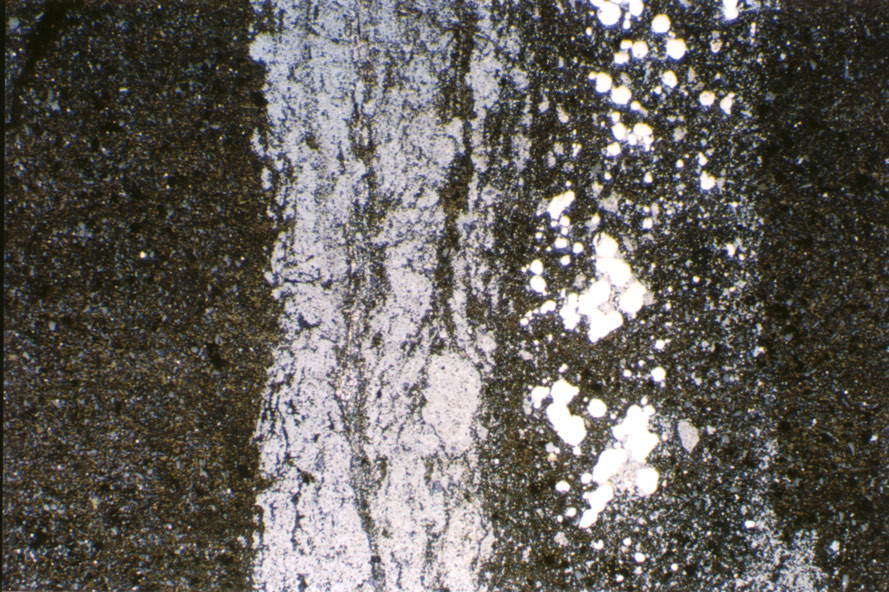
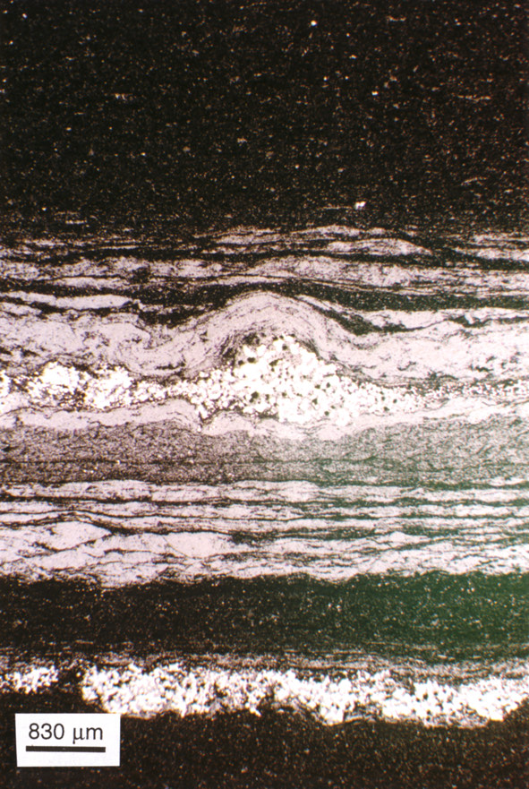
At this scale, does the ore look like veins cutting the rock, or layers in it? How thick are the pale bands?
Show what I see
- A: a band of fine sphalerite grains parallel to the layering, with rounded sphalerite aggregates scattered in the darker sediment beside it.
- B: pale sulphide bands a fraction of a millimetre thick between dark carbonaceous mud layers, gently draped over a lump.
So the sulphide is layered with the sediment, not cutting it: microlaminae of sulphide interbedded with carbonaceous mudstone. The rounded aggregates match sphalerite clumps that grew in the water or brine and sank. Look at how fine everything is, and you can see why these ores are hard to process.
Not everyone accepts that all the sulphide was exhaled onto the seafloor. Other models put it under the seafloor: replacement of permeable layers soon after burial, or later tectonic replacement during deformation. At MacMillan Pass in the Yukon, Magnall and others proposed that barite formed first in the sediment and was then replaced by sulphide: barite is barium sulphate, so incoming metals can react with it, make sulphides, and release barium to be redeposited further away. Cross-cutting sulphide veinlets and sphalerite replacing barite support it there. But that is one small deposit. Most SEDEX deposits, and all the large ones, are best explained as exhalative and syngenetic. slides 27, 32 and 33 lecture recording, 2 Oct
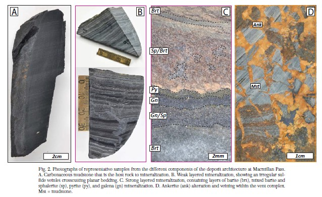
Anatomy of a deposit
SEDEX ore bodies vary in shape: mounds, lenses and sheets. The exhalative parts have a high aspect ratio, about 20:1, much longer than they are thick. Their internal layout is controlled by distance from the vent and by fluid chemistry. slide 35 Walk one from the feeder fault outward.
Walk away from the vent
Zones and trends from the GSC summary figure on slide 34; the distances and the high, moderate and low levels are schematic.
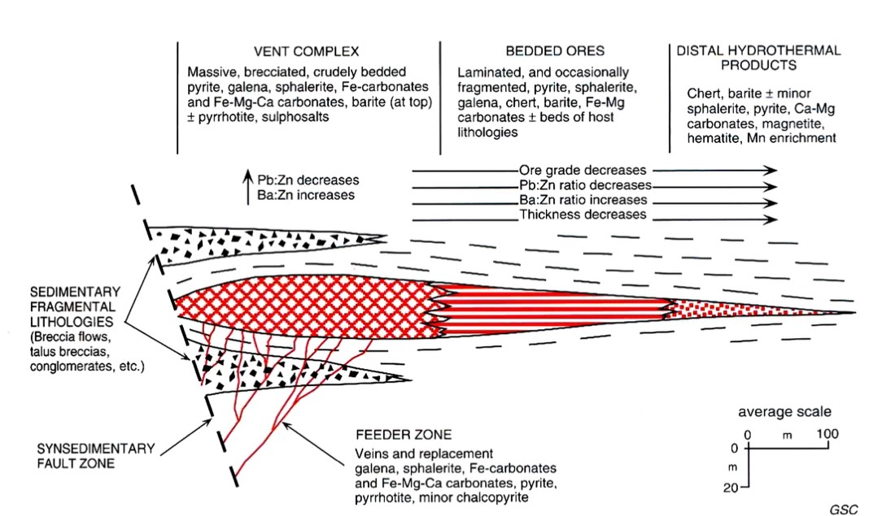
That outward rise in barium is useful. If you find bedded barite, there is a very good chance sulphide lies somewhere in the same system, so barite beds are a classic exploration indicator. lecture recording, 2 Oct
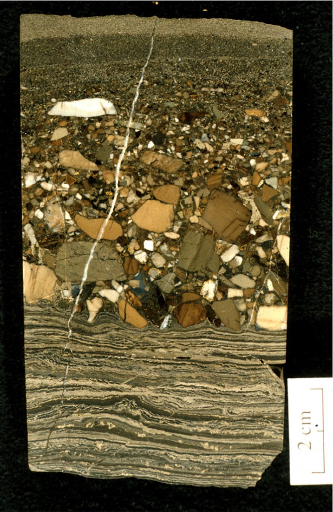
Describe the two parts of this slab and the contact between them. What happened, in order?
Show what I see
- Bottom: finely laminated ore, the layers gently wavy, with an irregular, slightly scoured top.
- Top: a sedimentary breccia of angular to rounded clasts of different rocks, fining upward into dark sand.
- A thin white vein cuts both, so it came last.
So laminated Zn-Pb ore formed first, then a debris flow, probably shed off an active fault scarp, dumped breccia on top of it, and later a vein cut through everything. Breccia over banded sulphide is unusual, and breccias like this mark the vent area, where fault movement keeps shedding debris. Mineralising fluid passing through a breccia near a vent will mineralise it too.
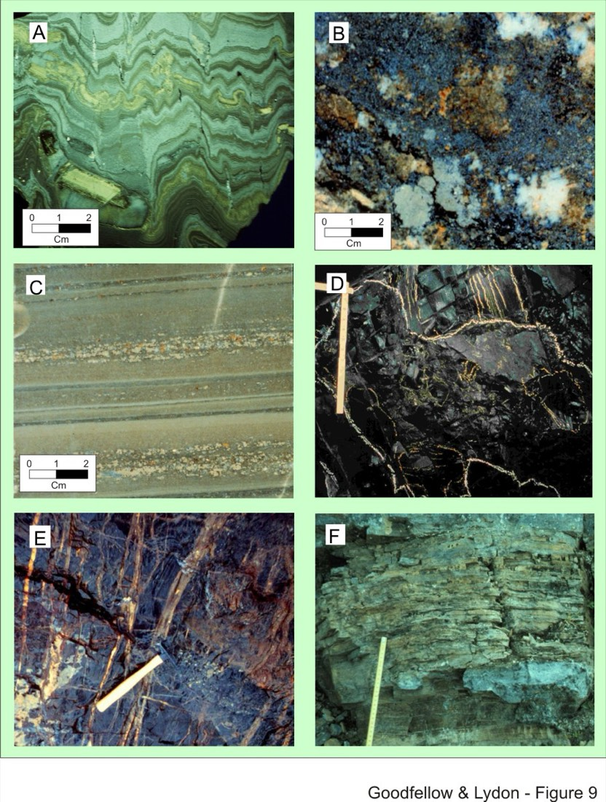
North Australian SEDEX and their halos
The north Australian deposits share a recognisable look. They sit next to major, deep-seated faults that moved during sedimentation, in dolomitic black shales. They are mostly distal, with no feeder zones or vent complexes. Multiple ore lenses are common, and Pb/Zn varies both laterally and vertically, because each new brine pulse arrives with a slightly different chemistry. Most are zinc-rich. slides 38 and 39 lecture recording, 2 Oct
Around them are large, stratabound halos you can’t see by eye. Ross Large and colleagues mapped iron-manganese carbonate halos at HYC, Century, Mount Isa and Lady Loretta. Carbonate in the host gets more iron-rich toward ore: dolomite → ferroan dolomite → → . Siderite shows up as brown carbonate spots right around the ore body, ankerite as pale orange or yellow carbonate further out. There are also Mn and thallium halos, a SEDEX alteration index, and carbon, oxygen and strontium isotope halos. Thallium might be a few ppm against a background of one, so you only see it with ICP-MS assays. slide 40 (Large et al., 1998) lecture recording, 2 Oct
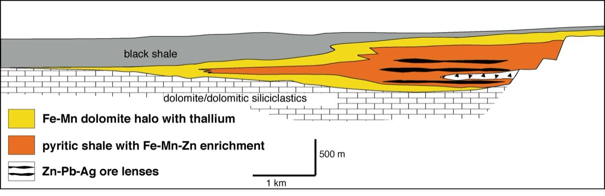
Vector in on the ore0 holes
Tap a drill collar. Each hole logs the carbonate in the favourable horizon (sid siderite, ank ankerite, Fe-dol ferroan dolomite, dol dolomite) and its thallium. Find the ore lens in as few holes as you can.
Invented game data. The carbonate sequence follows slide 40; the distances and thallium values are made up for teaching.
The deposits differ in their pyrite and siderite: Century has little pyrite and lots of siderite, HYC lots of pyrite and little siderite. slide 47
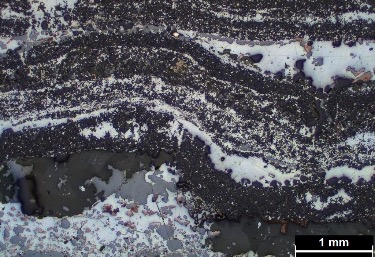
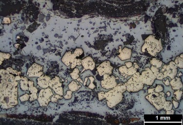
In B, the pale cream grains have straight edges and look pitted. Which mineral are they, and what about A tells you this is SEDEX ore?
Show what I see
- B: pale cream, high reflectance, hard (they stand out and are pitted from polishing), with crystal faces: pyrite euhedra, in a paler bluish-grey sulphide that is most likely galena.
- A: very fine, wavy laminae of sulphide and dark carbonaceous sediment at the millimetre scale, gently folded.
So you have fine-grained laminated sulphide with pyrite in carbonaceous sediment, the SEDEX signature. The galena call in B is from colour and reflectance only, so treat it as likely rather than certain. The gentle folds in A could be soft-sediment folds or compaction rather than later deformation.
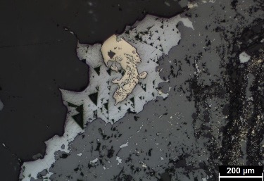
Look at the bright white mineral. What are the black triangles, and what does that identify?
Show what I see
- Bright white, high reflectance, soft-looking surface.
- Sharp black triangular pits.
So it’s galena: the triangles are cleavage pits, where cubic cleavage fragments plucked out during polishing. The grey around it, with lower reflectance, is most likely sphalerite and carbonate gangue. The cream grain inside isn’t identified on the slide; from colour alone it could be pyrite.
Sphalerite can carry tiny inclusions of chalcopyrite, called , and it’s used as a sign of higher formation temperature. lecture recording, 2 Oct Check the threshold in your own notes: the recording gives both 140 °C and 240 °C here, and the auto-transcript is unclear.
- The lab ore suites include Mount Isa and Lady Loretta polished blocks and hand specimens. Expect fine-grained, laminated sphalerite, galena and pyrite in dark carbonaceous, dolomitic siltstone.
- A Mount Isa hand specimen feels heavy for a dull black rock because it is full of fine galena.
- In reflected light: galena white with triangular pits; pyrite pale cream, hard and often euhedral; sphalerite grey with low reflectance.
- North Australian SEDEX: next to deep syn-sedimentary faults, in dolomitic black shale, mostly distal, multiple lenses, Pb/Zn zoning.
- Carbonate halo toward ore: dolomite → ferroan dolomite → ankerite → siderite; plus Mn, Tl, C/O and Sr isotope halos.
- δ³⁴S -10 to +30‰; uniform, high-μ Pb isotopes from intrabasinal crust.
Where they are, how big, how found
SEDEX deposits are restricted to a few regions because they need an unusual combination: a continental rift, an enclosed, anoxic sea, and a change from permeable clastics to impermeable shale and carbonate on top. Where you find one, you usually find several in the same basin. Northern Australia dominates the world list. Others are in South Africa (Gamsberg, Broken Hill, Rosh Pinah, mostly highly metamorphosed), Alaska (Red Dog), the Yukon (Howards Pass), British Columbia (Sullivan), Germany (Rammelsberg, mined since medieval times), Rajasthan in India, and western China. New South Wales has none: it never had the right tectonic setting. slide 41 lecture recording, 2 Oct
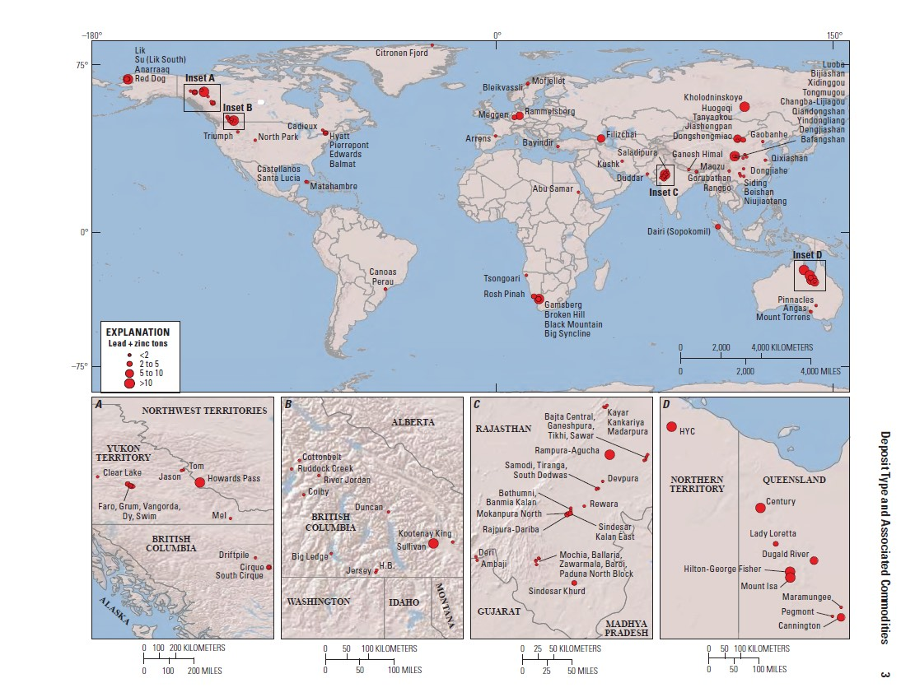
Around Mount Isa and the Gulf you’ll find HYC (McArthur River) in the Northern Territory, then Century, Mount Isa and Hilton-George Fisher, Dugald River, Lady Loretta and Cannington in Queensland, with smaller ones like Walford Creek and Bluebush. Cannington, which the lecture groups with these, is Australia’s biggest silver mine. slide 42 lecture recording, 2 Oct
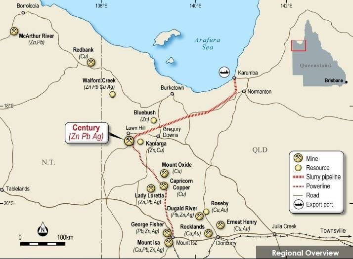
Size brings its own problems. Century was so big that its owners spent hundreds of millions of dollars on a slurry pipeline to the Gulf. A railway would have cost far more, and the far northwest floods in the wet season, which would stop a railway, and a mine this size has to run 24 hours a day. Mount Isa, by contrast, already had a railway. lecture recording, 2 Oct
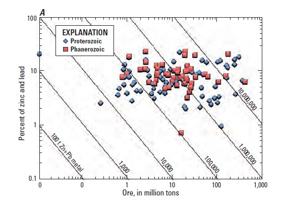
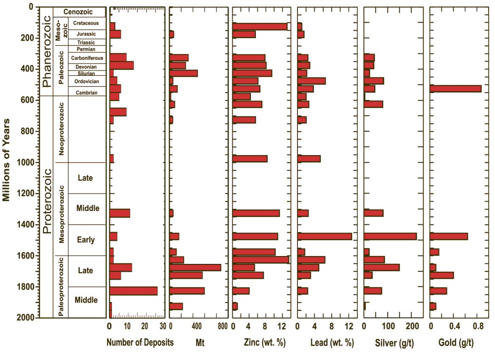
Grades are typically 5 to 20% Zn + Pb and deposits are mostly under 300 Mt, though some are much bigger, like Red Dog. Some carry up to 2 wt% Cu, which matters at today’s copper prices. By contained Zn + Pb, Hilton-George Fisher and Mount Isa together top the world, followed by Red Dog and HYC; Century was almost pure zinc with hardly any lead. Through time there are lots in the mid Proterozoic (mostly Australian), a gap in the late Proterozoic, then many in the Phanerozoic (Europe and China). Very few carry gold. slides 43 and 44 lecture recording, 2 Oct
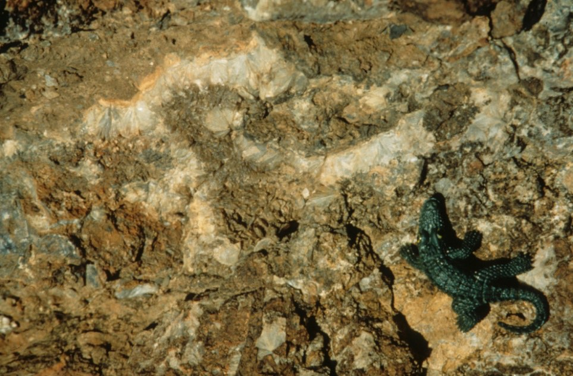
This weathered outcrop was the only surface sign of HYC. What is the white mineral, and why does it matter?
Show what I see
- Brown, iron-stained, cavernous rock: a small gossan.
- White crusts of fine bladed crystals.
So the white mineral is , Zn₄Si₂O₇(OH)₂·H₂O, a zinc silicate that forms when zinc sulphide weathers (the supergene story of Lecture 2). A tiny gossan with a little hemimorphite was all that showed at surface of what became Australia’s biggest SEDEX deposit. Syd Carter and Ron Beresford recognised it. slide 46
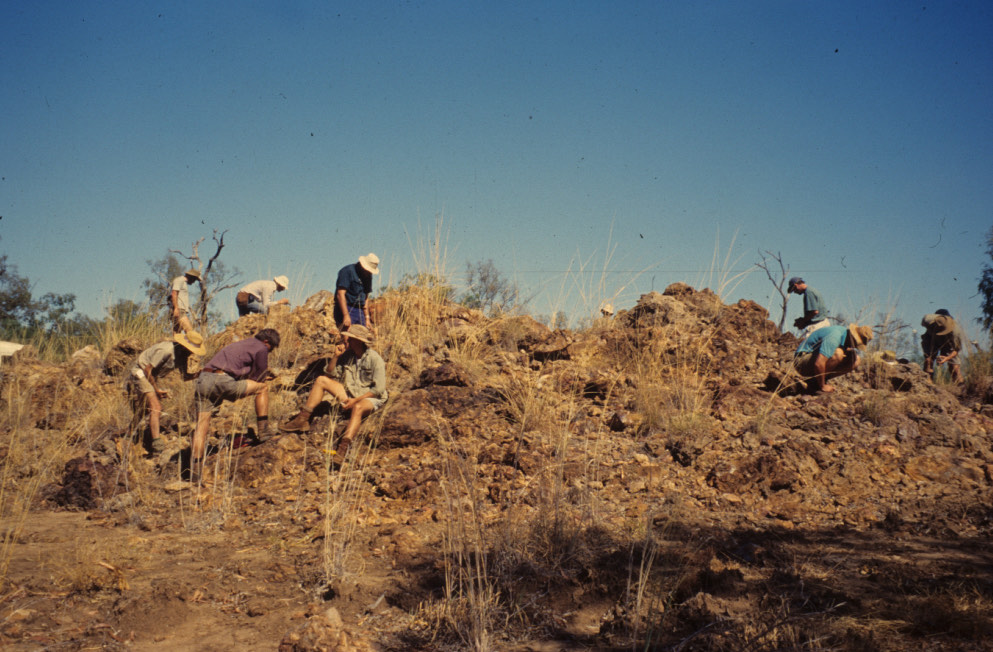
Exploration manager’s desk0 / 3
- Grades 5 to 20% Zn + Pb, mostly under 300 Mt (Red Dog much larger); up to 2 wt% Cu.
- Biggest by Zn + Pb: Hilton-George Fisher and Mount Isa, then Red Dog, HYC; Century almost all zinc.
- Mid Proterozoic (Australia) and Phanerozoic (Europe, China); a late Proterozoic gap.
- HYC was found from a tiny hemimorphite gossan.
Self-test
Answer out loud or on paper before you open each one. Claim the ounces if you got it.
Glossary and flashcards
Terms this lecture assumes or defines quickly. The dotted words in the text open them in place.
Flashcards
Where this goes next
Lecture 10 turns to VMS deposits, the volcanic-hosted relatives, where the vents are hotter and the sulphide really is massive. Keep the proximal and distal ideas from here: the same density logic decides whether a vent builds a mound or a brine pool. The modern vents of Lecture 6 are the live version of both.